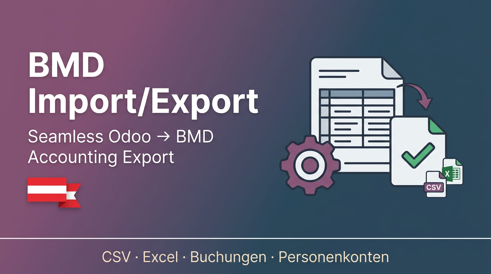

Export customer invoices, supplier invoices, credit notes and refunds in BMD "Buchungen" format with correct tax codes, account numbers and booking dates.
Export customers and suppliers in BMD "Personenkonten" format including Kontonummer, Matchcode, address, and UID-Nummer.
Map BMD column names to Odoo fields with configurable sequence and export type.
Choose Tab, Semicolon or Comma as CSV delimiter. Supports UTF-8, UTF-8 with BOM, and Windows-1252 encoding.
Export to plain CSV for direct BMD import, or to Excel for review and manual adjustments before importing.
| # | Step | Description |
|---|---|---|
| 1 | Configure | Go to Accounting → BMD Export → Export Configuration and set delimiter, encoding, and header mappings. |
| 2 | Export Invoices | Go to Accounting → BMD Export → Export Invoices, select a date range and document types, then click Export. |
| 3 | Export Contacts | Go to Accounting → BMD Export → Export Contacts, choose customers, suppliers or both, then click Export. |
| 4 | Import into BMD | Import the generated CSV/Excel file into your BMD software using the standard BMD import wizard. |
account) modulel10n_at) modulerequirements.txt on Odoo.sh)